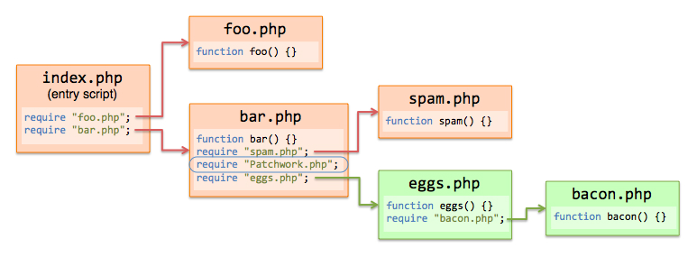

Setup
After obtaining Patchwork as a PHAR or using Composer, some steps are necessary to set it up.
While Patchwork is picky about setup conditions, in most cases either one of the following two patterns will suffice:
For PHPUnit tests, simply add this command line flag: --bootstrap vendor/antecedent/patchwork/Patchwork.php, with the path adjusted if necessary.
-
For other use cases, use a dummy entry script:
require "vendor/antecedent/patchwork/Patchwork.php";
require "actualEntryScript.php";
Detailed Setup
The exact place where an include statement referring to Patchwork is inserted is of great importance.
This is because using Patchwork, it is only possible to redefine functions and methods residing in files that are run by PHP later than patchwork.phar (or Patchwork.php) is.
Please note that this also means that functions and methods defined in your entry script will not be eligible for redefinition.
The following graphic should help you familiarize yourself with the constraints described above, which are a direct consequence of the preprocessing mechanism employed by Patchwork. Here, functions defined in green files are redefinable, and ones in red files are not.
Using Composer
Patchwork can be obtained using Composer. A composer.json with Patchwork as the only required package would look like this:
{ "require-dev": { "antecedent/patchwork": "*" } }
After running Composer, you should be able to import Patchwork by placing a require statement in your code:
require "vendor/antecedent/patchwork/Patchwork.php";
It must, however, be noted that the exact place of this statement has the same consequences (described above) as it does for a PHAR installation.